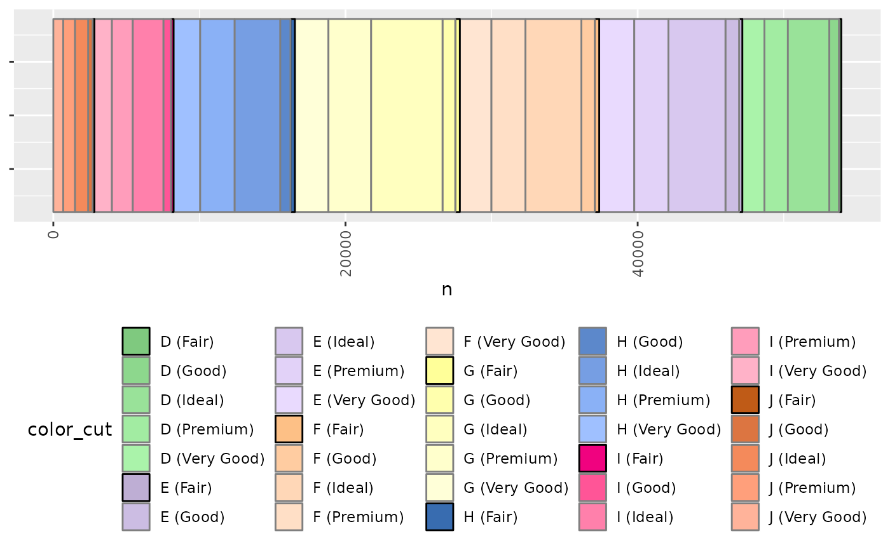

scale_fill_subtype.RdIf you have a categorical variable defining colour or fill and it has a natural grouping you can use this to have a colour scale involving major colors defining the major groupings, and these are progressively lightened for each of the subcategories.
scale_fill_subtype( .palette, subclasses, ..., undefined = "#606060", lighten = NA, na.value = "grey50", aesthetics = "fill" )
| .palette | the palette for the major groupings, either as a function e.g. 'scales::viridis_pal', or as a manual set of colors e.g. 'c("#FF0000","#00FF00","#0000FF")'. if a function can be either discrete or continuous palette. |
|---|---|
| subclasses | a vector containing the count of the subcategories, e.g. c(2,3,4) defines 3 major categories and a total of 9 sub-categories |
| ... | additional options to be passed to the major palette function, e.g. 'option="magma"', or to 'discrete_scale()', e.g. 'alpha=0.5' |
| undefined | If the number of sub-categories in the data is longer than defined in 'subclasses', the extra categories are assumed to be an set of "other" categories, which will be coloured using this base colour |
| lighten | The factor by which to lighten the colour at each step of the subgrouping. If left blank this will calculate a fraction based on the number of levels of the subgroup. Otherwise if, e.g. 0.5 the first sub category will be the full saturation, the second 0.5 saturation, the third 0.25 saturation, the fourth 0.125 and so on. |
| na.value | what colour for NA values. |
| aesthetics | this is a fill scale by default but can be used for colour by setting this to "color" or both as c("fill","color") |
a ggplot scale
library(tidyverse) # prep some data: data = diamonds %>% mutate(color_cut = sprintf("%s (%s)",color,cut)) %>% group_by(color,cut,color_cut) %>% count() %>% ungroup() %>% mutate(color_cut = ordered(color_cut)) # work out the number of subgroups for each group: subgroups = data %>% select(color,cut) %>% distinct %>% group_by(color) %>% count() %>% pull(n) # plot as a horizontal stacked bar chart using color brewer as the main # colour axis. N.b. having enough different colours here is important ggplot(data, aes(y=1,x=n, fill=color_cut, color=color_cut))+ geom_bar(stat="identity",orientation = "y")+ ggrrr::scale_fill_subtype(.palette = scales::brewer_pal, palette="Accent", subclasses = subgroups)+ ggrrr::scale_colour_subtype(subclasses=subgroups)+ ggrrr::gg_hide_Y_axis()+ ggrrr::gg_narrow()